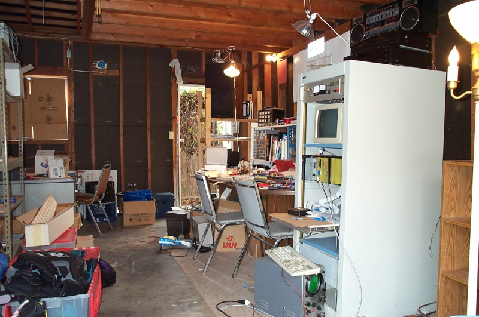
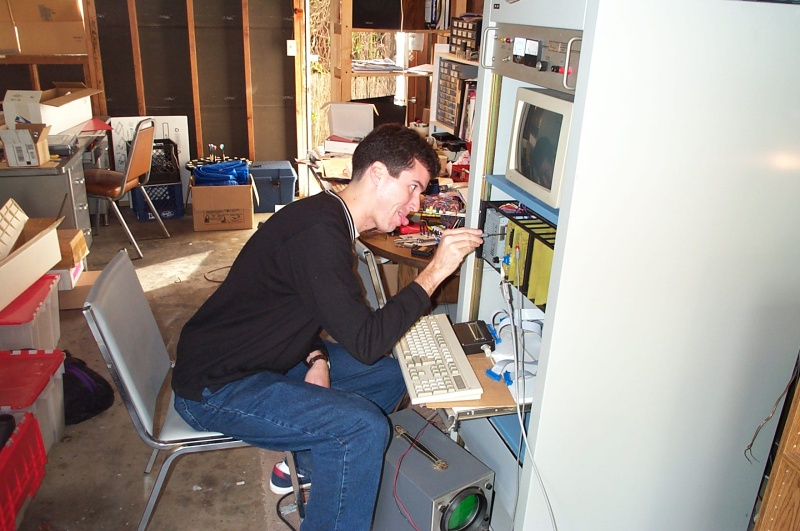
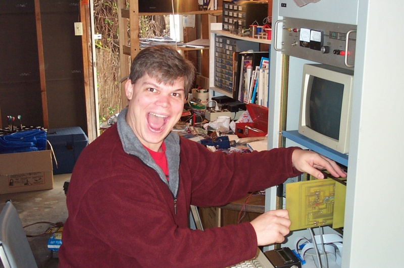

The Hardware Lab (A.K.A. the Garage)
At first we worked on Alice 2 in Brad's apartment on two tables in what would normally be a dining room. When Brad moved to a house in Mountain View, we took over the garage (much to his roommates' distress) and set up a very large conference table for all the parts, etc. This garage was the Alice design center for several years, even once or twice after Brad moved out of the house. (Brad thanks his previous roommates and the current residents.)
Because the garage wasn't previously set up for engineering, we brought in a space heater for the colder months (thankfully we had California weather) and placed two industrial-strength floodlamps underneath the storage platform above our heads. We also found it useful to place some reference materials on the wall opposite where we sat at the table. You might be able to pick out the pinouts for the Z-80, common logic circuits, and the resistor color code. If you look really carefully you can see a risque postcard from “Jazz City New Orleans.” And of course we put up Brad's old MACBSD license plate for nostalgic reminiscing.


The garage was the site of many bad jokes and junk food gorging. The house on Williams Way was just a block away from a little food mart that we affectionately referred to as the “Kwik-E-Mart” in homage to The Simpsons. We found that much of the time we spent “working on Alice 2” was really all about laughing, talking about women we were dating, grousing about work, bitching about the sad state of software engineering today, or just chatting about whatever until we were too tired to think of anything else.
Lawrence:
Brad:
